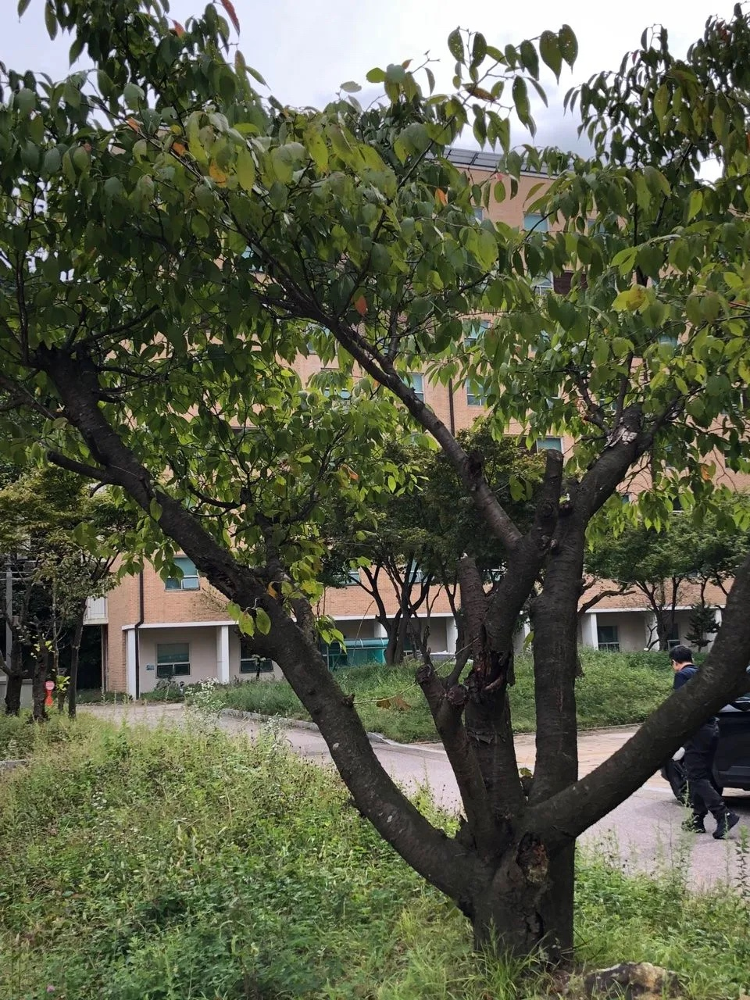

Gallery

Details
- 분류: 장미과의 낙엽성 교목
- 꽃말: 순결, 절세미인, 고상, 담백, 미려, 교양, 정숙, 냉정, 내면의 아름다움, 부와 번영, 행운
- 학명: Prunus serrulata
- 꽃:
- 백색 또는 연한 홍색으로 4-5월에 잎과 함께 핌
- 산방상 꽃차례에 2-4개씩 모여 달림
- 꽃의 지름은 약 2.2-3.5cm, 꽃자루는 2-4.5cm
- 잎/줄기:
- 잎: 어긋나며 길이 7-11cm의 타원상 난형 또는 도란상 타원형
- 잎끝은 뾰족하고 가장자리에 톱니가 있음
- 줄기: 자갈색으로 옆으로 벗겨짐
- 열매: 핵과로 지름 7-9mm의 거의 구형, 5-6월에 흑자색으로 익음
Location
서울대학교